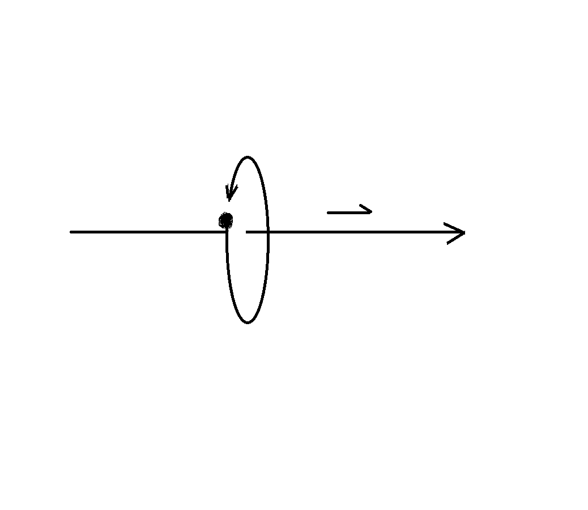

揭秘光的本质
人类一开始认为光是微粒子，代表人物就是牛顿，后来英国物理学家托马斯·杨的双缝干涉试验证明了光具有波动性，后来，苏格兰物理学家的麦克斯韦指出，光是电磁波的一种，人类在这个时期，光的波动学说占据了主流。
在19世纪中后期至20世纪初，爱因斯坦发现的光电效应，表明光具有微粒子性，麦克斯韦光的波动学说受到了严重的挑战。
普朗克研究黑体辐射，认为物体以电磁波向外辐射能量是不连续，爱因斯坦接受了普朗克思想，并基于光电效应提出光量子假说。
后来，德布罗意提出不仅是光，任何实物粒子（小到电子、质子，大到足球、太阳）都具有波粒二象性，并指出了波动的频率、波长与与微粒的能量、动量之间的关系。
E = hν，
p = h /λ。
至此，量子力学以波粒二象性概念为基础正式建立起来。
但是，这个结果让人很不满意，光为什么又是波又是粒子？光作为一种波为什么能够在没有介质的真空中传播？我们知道声波就是依靠空气来传播的，在月球上，说话周围的人就听不到。
这些问题，目前主流科学界无法解释。
统一场论的出现【百度 统一场论6版】，可以给出一种彻底的解释。
统一场论认为，加速运动的负电荷可以产生反引力场，加速运动负电荷可以引起负电荷周围的电场和磁场发生变化，
统一场论中变化磁场产生电场、引力场的积分公式为：
∮[(dB/dt)·dS ] = - u∮A·dR’ + ∮E·dR
∮是环绕积分，积分范围是从0到2π，B是磁场，t是时间，d是微分号，S是矢量面元，A是引力场，u是常数， E是电场，R’和R都是曲面S的边缘曲线。
加速运动负电荷产生的反引力场，可以抵消电子自身的质量，可以使质量变成了零，质量只要变成了零，电荷同时也变为零。
因为，在统一场论中，电荷和质量都是物体粒子周围空间以光速向外发散运动造成的。
当物体以光速相对于我们运动的时候，周围空间的光速运动将归零，原因是光速不变，光速不能叠加。
宇宙中任何物体，只要使其质量变成零，就会处于一种激发态，一定突然以光速运动起来，并且，以后在没有外来因素的改变情况下，会一种以光速惯性运动下去。
电子从一个正常质量变成零，处于激发状态，需要一个固定的能量，少于这个能量电子无法处于激发态，无法以光速运动。大于这个能量也是不可能的，以为一旦能量的数值达到了，电子就变成激发态以光速运动走了，你再想加能量，就加不上了。
这个固定的能量，就是普朗克发现辐射电磁波，辐射的能量总是一个最小单位的整数倍，能量是不连续的根本原因，也是量子力学中量子的根本解释。
以上就是光子的形成基本原理，外星人的飞碟其飞行原理和光子是一样的。
光子的飞行原理和枪子弹的飞行原理完全不一样。这种不一样，根本的区别是各自遵守的动量守恒不一样。
光子遵守的动量守恒是P = mC ,
上式中P是各种运动时候的动量，m是光子的运动质量，C是矢量光速。
在统一场论中，矢量光速方向可以变化，模c是标量光速，不能变化。
一个物体粒子相对于我们静止，具有静止动量P静= m’C’
当这个物体相对于我们以速度V运动的时候，运动动量为
P动 = m(C-V)
从上式中，我们可以看到，如果物体粒子运动速度V = C，动量的速度部分C-V就等于零。
统一场论中的动量m(C-V)在数量上仍然是守恒的，这个就导致了m趋向于无穷大。
无穷大是我们不能接受的，这里还存在了另一种可能性。就是物体粒子的静止质量变成了零。
在统一场论中，静止动量m’C’的数量 m’c和运动动量m(C-V)的数量mc√（1 - v²/c²）相等。
m’c = mc√（1 - v²/c²）
上式除以标量光速c，结果就是相对论中的质速关系方程。
m’ = m√（1 - v²/c²）
从质速关系方程可以看出，当物体粒子以光速运动的时候，如果静止质量为零的时候，运动质量可以是一个适当的量，不会是无穷大。
而枪子弹的运动原理所遵守的动量守恒是P = mV,V是枪子弹的运动速度，m是枪子弹的质量。
在牛顿力学中，质量m是一个不变量，如果枪子弹处于一个系统中受力，动量发生变化，由于质量m在牛顿力学中是不变的，所以，动量的变化导致了枪子弹速度V发生变化，可以从0【枪子弹本来静止时候的速度】变化到一个确定的速度。
光子和我们宏观看到的物体运动，都是遵守动量守恒的原因，只是光子遵守的动量是质量乘以矢量光速，而枪子弹遵守的动量是质量乘以普通运动速度。
光子的波动性是空间本身的波动，我们生活的空间时刻以光速运动，光子是静止在空间中，随空间一同运动。
宇宙一切物体，在相对于我们静止的情况下，周围空间总是以光速向四周发散运动，空间这种运动还包含了波动，空间的波动速度就是光速。
人类所观察到运动，大部分都是物体在空间中运动和物体周围空间运动两种运动的合成。
比如，我们用牛顿力学中的动量mV和动力学方程F = mA来描述物体在空间中以速度V运动，或者以加速度A运动，为什么要带一个质量m？
在统一场论中，这个质量m就表示物体粒子周围以矢量光速运动的空间位移的条数，而空间时刻在波动。
这个就是量子力学中任何实物粒子（小到电子、质子，大到足球、太阳）都具有波粒二象性的背后原因。
普通物体的运动是在空间中运动和周围空间运动两种运动的合成。而光子只有在空间中运动，周围空间运动完全消失。
在统一场论中，光子模型常见的有两种，
一，加速运动的负电荷产生的光子是单个激发电子的，以圆柱状螺旋式在运动。

正负电子相遇产生的光子是两个电子绕一个中心轴旋转，并且都是以旋转平面垂直方向以光速直线运动，也是一种圆柱状螺旋式运动。
 由于我们地球人用光子观察光子，观察的时候会改变光子的形态，所以，人类一直到现在不能直接观察光子。
外星人用人工场扫描来观察者光子，人工场本质上是人工操纵空间，而空间可以无限分割，可以观察比光子还要小的物质，所以，可以清楚地观察到光子的模型。
如果我们地球人发明出人工场扫描，就可以验证我上面提到的两个常见的光子模型。
由于我们地球人用光子观察光子，观察的时候会改变光子的形态，所以，人类一直到现在不能直接观察光子。
外星人用人工场扫描来观察者光子，人工场本质上是人工操纵空间，而空间可以无限分割，可以观察比光子还要小的物质，所以，可以清楚地观察到光子的模型。
如果我们地球人发明出人工场扫描，就可以验证我上面提到的两个常见的光子模型。